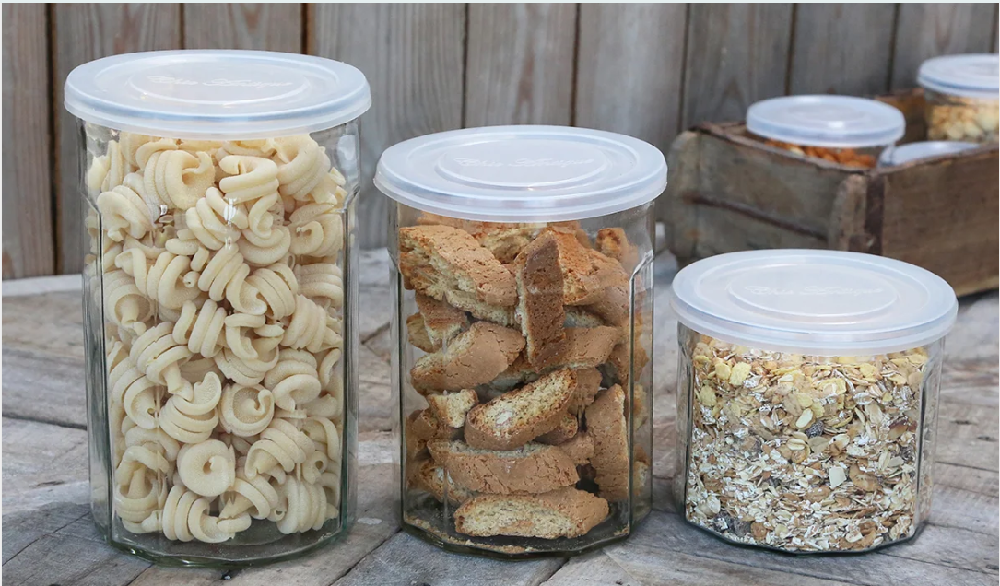

Opbevaringsvejledning
Korrekt emballage har betydning for din mad
Mad og madrester skal du pakke ind i den rigtige emballage, for ikke al indpakning og opbevaring egner sig til mad.
Forkert emballage kan nemlig afgive uønsket kemi til din mad.
Men vælger du derimod den rigtige emballage, kan det betyde, at din mad kan holde sig længere.
Mærkning viser, om emballagen må bruges til mad.
Plastikbøtter, fade, skåle, glas og andet skal have glas- og gaffelsymbolet, for at du kan bruge det til at opbevare mad i.
Glas- og gaffelsymbolet kan du ikke nødvendigvis se, hvis det er oplagt, at genstanden kan bruges til mad. Tallerkner og drikkeglas har for eksempel ikke glas-og gaffelsymbolet, da det er genstande, der normalt bliver brugt til mad.
Brugsanvisningen kan fortælle dig, om en beholder må bruges til opbevaring af mad. Den kan også fortælle, om emballagen kun må bruges til bestemte typer mad, eller om den må komme i mikrobølgeovnen.
